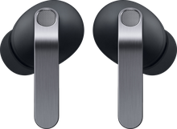

Galaxy Buds4 Pro for iOS 27
어떤 버전으로 열까요?
4
개선 버전
최신
리퀴드 글라스 렌즈, 유리 툴바, 밀어서 뒤로가기까지 전부 다듬은 버전
3
토글 · 블러 수정
토글 꾹 누르기와 이어버드 나올 때 블러까지 고친 버전
2
꾹 누르기 수정
꾹 누르면 투명해지는 효과만 고친 버전
1
이전 버전
처음 받은 그대로의 원본
앱 안에서 왼쪽 위 나가기 버튼을 누르면 이 화면으로 돌아와요